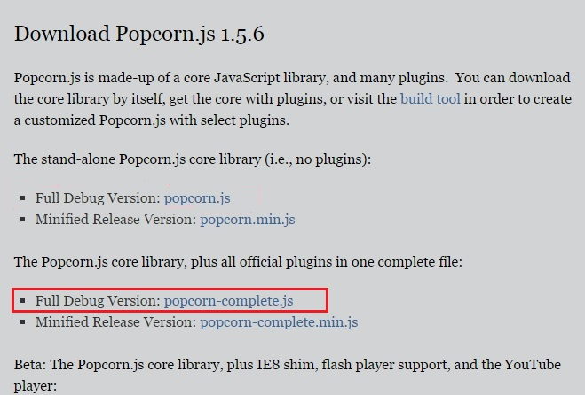
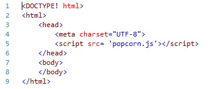

First things first, you'll need to download the Popcorn.js library. If you click here you'll be taken to the page to download the library. There are multiple options, but don't be overwhelmed. All you will need to get started is the full stand-alone Popcorn.js library
If you have any confusion take a look at this image. This is the file you want:

Now that you've located the file the next part is simple. Download the file and save it
as popcorn.js. Create an html file and include the script. You now should have html code
that looks something like this:

Once you have the popcorn.js library set up, it's time to add some media. In this example, we'll demonstrate how to add a video element.
Here is the code you will use:
You start with the <video> tag. This creates and instance of a video
element.
The <video> element has many optional attributes. The only ones we are going to worry about
are: controls, height, width, and src
<source>
element can be used. The <video> element can contain several video
sources.If you are interested in adding other attributes to your video, you can find a complete list here.
Furthermore, there are three different formats of video file supported by the
<video> element: MP4, WebM, and Ogg. Different browsers support different
types of files. Information on browser support can be found
here. If the
<video> element is not supported by a browser, the text between
<video> and </video> is displayed. Often, to ensure that the video
will play across the majority of browsers, sources for the video in all three supported
formats are included.
**Note: The <video> element is new to HTML5
If you are wondering what this code produces here is the output
Additionally, instead of adding a video element an audio element can also be used. The process of adding an audio element is fairly similar.
Congratulations! You have just taken the first step in learning how to use Popcorn.